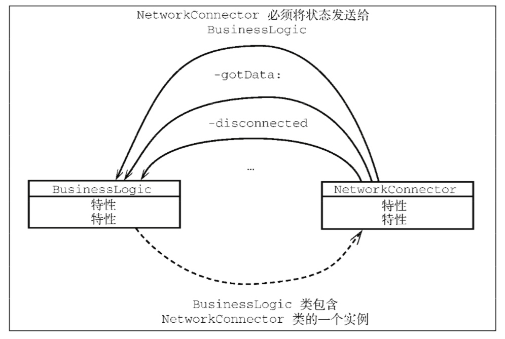

一.问题的产生

NetworkConnector类提供所有和网络服务器的交互，包括连接、断开连接和手法数据。BusinessLogic类会接收NetworkConnector收到的数据，并确定它的走向。
网络连接是一个在其他应用或同一个应用的其他地方一定会复用的东西。所以必须将它与BusinessLogic类设计成没有紧密耦合。

C++等语言使用多继承来解决这类问题，强制BusinessLogic类继承自NetworkConnector可以依赖的类。但是多继承会产生新的问题，即砖石问题。如果D类同时继承自B类和C类，同时B、C也继承自共同的超类A，这种情况下，如果D没有重写A中的方法，当D调用A类的方法的时候，无法确定会调用哪一个父类的方法B类的还是C类的？
Objective-C只能使用单继承。
二.Objective-C的解决方案
Objective-C使用协议来声明一个接口来解决这个问题。
接口是在不提供默认实现时由一个类来具体实现，它只提供声明这些方法的接口机制，让可复用组件不依赖于特定的类来实现，而依赖于以协议形式存在的接口。
协议的声明
@protocol NetworkClient
@required
-(void) networkConnector:(NetworkConnector *) in gotData:(NSData *) data;
@optional
-(void) networkConnectorDisconnected:(NetworkConnector *) in;
@end
@required关键字表明其后的方法是该协议必须实现的方法。
@optional关键字表明其后的方法是实现类可以选择性实现的方法。
同时，协议不能有成员变量。
声明一个必须实现协议的对象
id<NerworkClient> *delegate; //<>中是该对象必须实现的协议
通常使用id数据类型来声明实现给定协议的实例变量。编译器会通过<>中的协议类型来确认协议的必须按方法是否在该对象上实现了。
非正式协议
它是在Cocoa和Objective-C中的旧协议，通常是NSObject类的类别。
正式协议
正式协议可以提供更好的类型安全。用@protocol关键字来声明。有@required和@optional关键字来保证必须实现的和可选的方法。
避免协议循环依赖
协议在各自的声明中可以引用另一个协议。
@protocol Foo
-(void)someMethodRequiringBar:(id<Bar>)inBar;
@end
如果Bar也需要Foo协议的话，就会导致协议之间的循环依赖，发生编译器错误。
@protocol Bar
-(void)someMethodRequiringFoo:(id<Foo>)inFoo;
@end
解决方法，在Bar.h中加入@protocol Foo，告诉编译器Foo是一个协议，不用导入Foo.h。